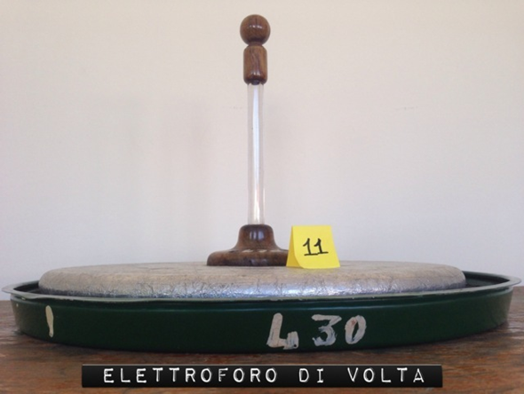

Elettroforo di Volta
Scuola di provenienza: Liceo Classico "P. Colletta", Avellino
Settore: Elettrostatica
Costruttori: Sconosciuto
Materiali: Lacca, vetro, allumnio e legno
Accessori: Nessuno
Stato di conservazione: Buono
Descrizione: È una macchina elettrica, cioè un apparato che serve per ottenere uno sviluppo di elettricità statica. La macchina elettrica più semplice è l’elettroforo. Questo apparato, inventato da Volta,verso il 1775, si compone di un disco di resina applicato ad un piatto di legno, costituenti la “schiacciata”, e di un disco pure di legno, ricoperto di una foglia di stagno e munito di un manico di vetro isolante. Per ottenere elettricità si comincia dal disseccare il piatto di resina e il disco riscaldandoli dolcemente, quindi si batte fortemente la resina con una pelle di gatto, che la elettrizza negativamente. Appoggiando allora il disco di legno ricoperto di stagno sulla resina, questa, che è assai cattivo conduttore, conserva la sua elettricità-negativa e, per la sua influenza sul disco, attrae l’ elettricità positiva verso la faccia che con essa è a contatto, intanto che respinge sull’altra l’elettricità negativa. Toccando la foglia di stagno con il dito, l’elettricità negativa viene sottratta ed il disco resta elettrizzato positivamente. Infatti, se con una mano lo si alza per il manico di vetro e gli si presenta l’altra mano, scocca una viva scintilla dovuta alla ricomposizione dell’elettricità positiva del disco con l’elettricità negativa della mano.In un’aria secca, il piatto di resina, una volta elettrizzato, può conservare la propria elettricità per parecchi mesi e durante questo tempo si possono ottenere tante scintille quante se ne vogliono senza battere di nuovo la resina con la pelle del gatto; basta che vi sia cura, ogni volta, di toccare prima il disco ricoperto di stagno, intanto che è in contatto con la resina, quindi una seconda volta quando lo si tiene per il manico. Per questa ragione Volta battezzò il suo strumento “elettroforo perpetuo”.